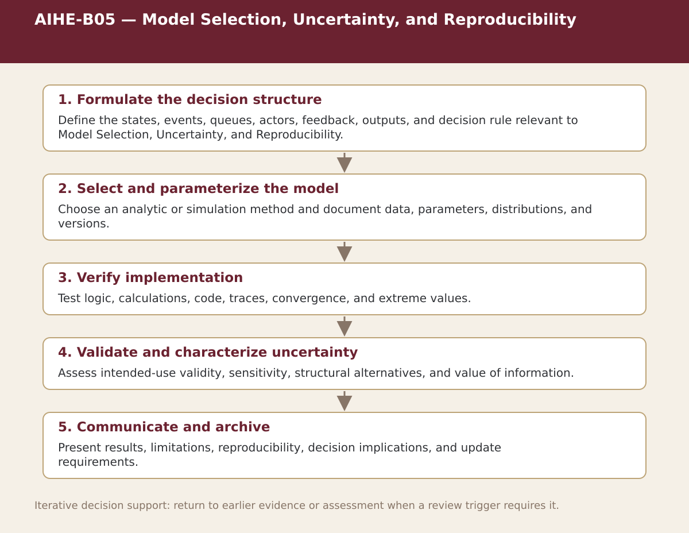

Core · Chapter 8
AIHE-B05 — Model Selection, Uncertainty, and Reproducibility
Select a decision model from the problem structure and document evidence, verification, uncertainty, and reproducibility.

Process steps
| Step | Stage | Purpose | Required Input | Expected Output | Decision Or Gate |
|---|---|---|---|---|---|
| 1 | Formulate the decision structure | Define the states, events, queues, actors, feedback, outputs, and decision rule relevant to Model Selection, Uncertainty, and Reproducibility. | Local evidence and the prior approved step | Versioned record for: Formulate the decision structure | Proceed, revise, escalate, restrict, or stop as appropriate |
| 2 | Select and parameterize the model | Choose an analytic or simulation method and document data, parameters, distributions, and versions. | Local evidence and the prior approved step | Versioned record for: Select and parameterize the model | Proceed, revise, escalate, restrict, or stop as appropriate |
| 3 | Verify implementation | Test logic, calculations, code, traces, convergence, and extreme values. | Local evidence and the prior approved step | Versioned record for: Verify implementation | Proceed, revise, escalate, restrict, or stop as appropriate |
| 4 | Validate and characterize uncertainty | Assess intended-use validity, sensitivity, structural alternatives, and value of information. | Local evidence and the prior approved step | Versioned record for: Validate and characterize uncertainty | Proceed, revise, escalate, restrict, or stop as appropriate |
| 5 | Communicate and archive | Present results, limitations, reproducibility, decision implications, and update requirements. | Local evidence and the prior approved step | Versioned record for: Communicate and archive | Proceed, revise, escalate, restrict, or stop as appropriate |
Status. This process map is a navigation and decision-support aid. Adapt it to the relevant jurisdiction, institution, population, workflow, technology version, evidence cut-off, and accountable authority.